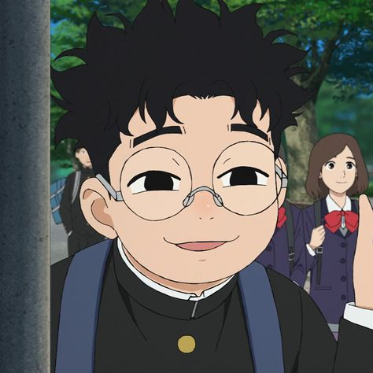

Principais Personagens

Aira Shiratori
Habilidade: Manipulação de Energia Sobrenatural
Aira possui uma conexão intensa com forças espirituais, permitindo que ela manipule energia sobrenatural de formas diversas.

Momo Ayase
Habilidade: Visão espiritual poderosa.
Momo é uma garota corajosa com a habilidade de ver e interagir com espíritos, além de lutar contra ameaças sobrenaturais.

Okarun
Habilidade: Transformação Espiritual (Modo Turbo)
Quando necessário, Okarun pode entrar em um estado de transformação que aumenta drasticamente suas capacidades físicas, incluindo força e resistência.

Seiko Ayase
Habilidade: Velocidade sobre-humana.
Uma entidade assustadora que se torna uma aliada inusitada na luta contra forças sobrenaturais.